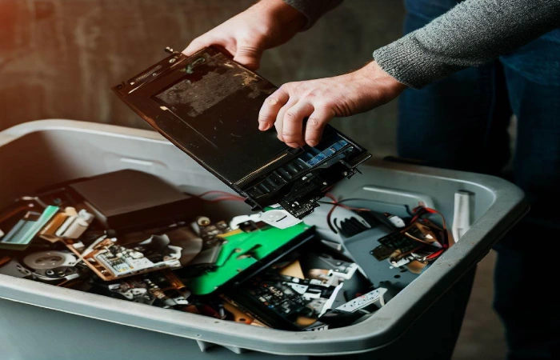

Reciclar o lixo eletrônico é essencial para minimizar seu impacto negativo no meio ambiente e na saúde pública. A reciclagem adequada desses dispositivos permite a recuperação de metais valiosos, como ouro, prata e cobre, reduzindo a necessidade de mineração desses recursos. Além disso, a reciclagem evita a contaminação do solo e da água, ajudando a preservar ecossistemas naturais.
Objetivos e Detalhes da Reciclagem

Com a crescente demanda por esse serviço e o aumento da conscientização da população com o reaproveitamento de materiais, a reciclagem de lixo eletrônico tem como objetivo reaproveitar todos os detritos encontrados como matéria-prima dentro de novos procedimentos industriais. Com isso, acabam tendo um novo destino, sendo totalmente úteis para novas aplicações e usos industriais e pessoais. A reciclagem de lixo eletrônico desmonta os aparelhos após seu recebimento e classifica cada material encontrado, como plástico, placas de circuitos, vidros, metais, metais pesados, elementos químicos e outros. Com isso, cada um tem uma destinação correta para que não afete o meio ambiente.
Estatisticas
Ao se falar em estatística, um número é extremamente importante de ser salientado: O Brasil é o quinto país que mais produz lixo eletronico no mundo. A gestora Green Eletron, junto com o instituto Radar Pesquisar, colheram dados por meio de pesquisa com a população que envolvem o tema de reciclagem dos REEL:
A maior parte dos brasileiros (87%) já ouviu falar em lixo eletrônico, mas um terço (33%) acredita que esse lixo está relacionado ao meio digital, como spam, e-mails, fotos ou arquivos. Para outros 42% dos brasileiros lixo eletrônico são aparelhos eletrônicos e eletrodomésticos quebrados e 3% acreditam que são todos os aparelhos que já viraram lixo, ou seja, apenas os que foram descartados, inclusive aqueles que acabam incorretamente em aterros ou na natureza.
Mais de 90% acreditam que celulares, smartphones, tablets, notebooks, pilhas e baterias são lixo eletrônico e estão corretos.
51% não acham que lâmpadas comuns, incandescentes e fluorescentes são lixo eletrônico; 34% acreditam que lanternas não são lixo eletrônico; e 37% acreditam que balanças não são lixo eletrônico. Na verdade, todos esses objetos são lixo eletrônico.
16% descartam com certa frequência algum eletroeletrônico no lixo comum. Esse tipo de descarte não permite a reciclagem das matérias-primas presentes nos aparelhos.
Um terço dos entrevistados (33%) nunca ouviu falar em pontos ou locais de descarte correto para lixo eletrônico.
A maioria (87%) disse guardar algum tipo de eletroeletrônico sem utilidade em casa. Mais de 30% fica com eles por mais de um ano.
Ao todo, foram entrevistadas para o estudo 2.075 pessoas de 18 a 65 anos, entre os dias 14 e 24 de maio de 2021. A pesquisa foi feita no Distrito Federal e em 13 estados: São Paulo, Rio de Janeiro, Minas Gerais, Espírito Santo, Bahia, Ceará, Pernambuco, Rio Grande do Sul, Paraná, Santa Catarina, Pará, Goiás e Mato Grosso do Sul.